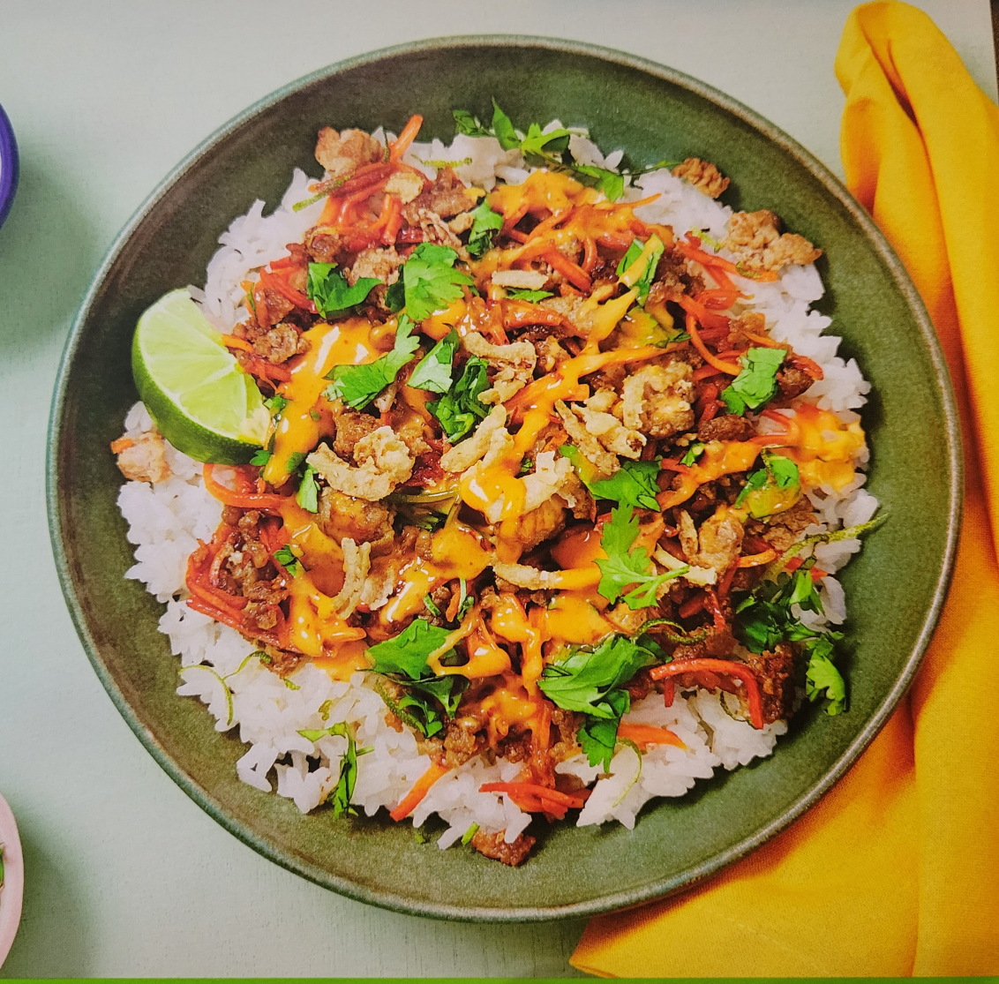

Home
Sesame Soy Pork Bowls

Ingredients
- 1 Cup - Jasmine Rice
- 10 oz - Ground Pork
- 2 TBSP - Mayonnaise
- 1 tsp - Sriracha
- 4 oz - Shredded Carrots
- 4 TBSP - Sweet Soy Glaze
- 1.5 oz - Sesame Dressing
- 1/2 Cup - Crispy Fried Onions
- 1/4 oz - Cilantro
- 1 - Lime
Bust Out
- Small pot
- Small Bowl
- Zester
- Large Pan
- Salt
- Pepper
- Cooking Oil (1 tsp)
- Sugar (1/2 tsp)
- Butter (1 TBSP)
1) Cook Rice
- In a small pot, comine rice, 11/4 cups of water, and a pinch of salt
- Bring to a boil, then cover and reduce to a low simmer
- Cook until Rice is tender, 15-18 minutes
- Keep covered off heat until ready to serve
2) Prep & Mix Mayo
- While rice cooks, wash and dry produce
- Zest and quarter lime
- Roughly chop cilantro
- In a small bowl, combine mayonnaise with Sriracha to taste
3) Cook Pork
- Heat a drizzle of oil in a large pan over medium-high heat
- Add pork and a big pinch of salt
- Cook, breaking up meat into pieces, until browned, 3-4 minutes
- Stir in carrots, sesame dressing, sweet soy glaze, and 1/2 tsp sugar
- Cook until carrots are softened, pork is cooked through, and sauce has thickened, 2-4 minutes
- Taste and season with salt and pepper. Turn off heat
4) Finish & Serve
- Fluff rice with a fork; stir in lime zest and 1 TBSP butter
- Season with salt and pepper
- Divide rice between bowls; top with pork mixture and any remaining sauce from pan
- Drizzle with Sriracha mayo, sprinkle with crispy fried onions and cilantro
- Serve with lime wedges on the side